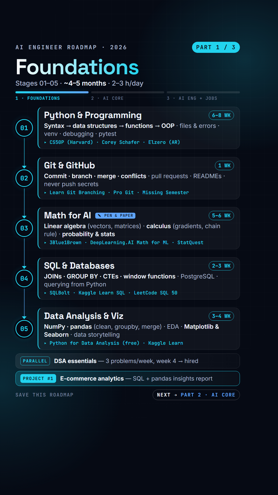
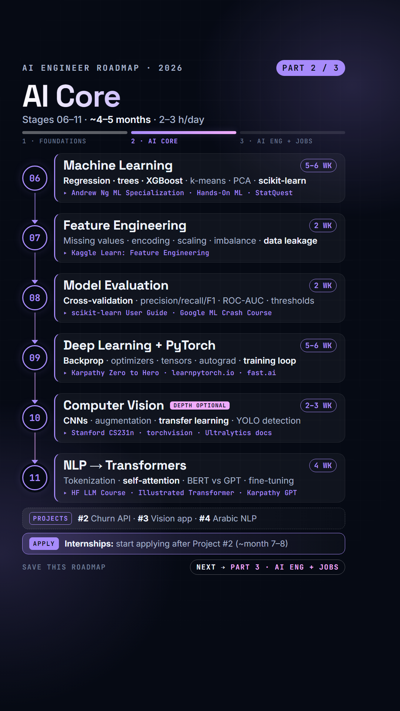
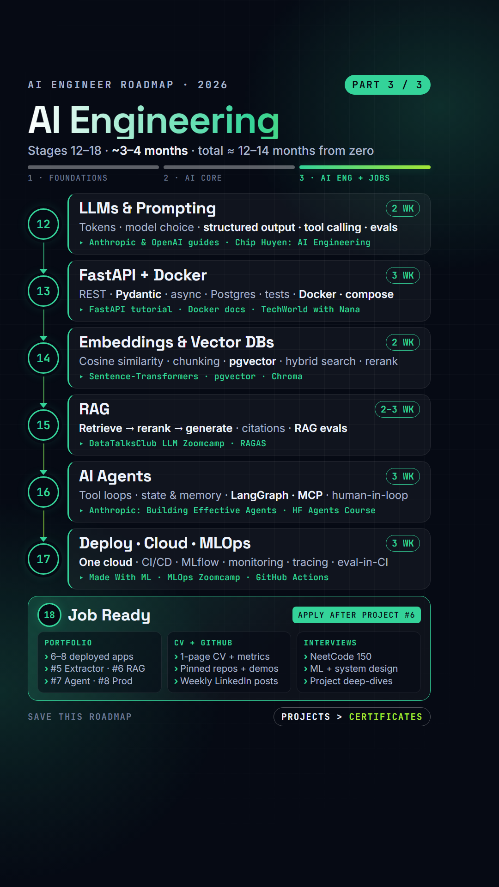

The short answer to the comment
"Who should I take a course with?" If you want one paid, structured spine: Andrew Ng's Machine Learning Specialization → Deep Learning Specialization (Coursera, DeepLearning.AI). Coursera offers financial aid, so cost shouldn't stop you. Everything else in this roadmap can be free. If you prefer Arabic for the early stages: Elzero Web School (Python, Git) and Hesham Asem (ML/DL in Arabic) are solid starting points, then switch to the English resources below. The job market works in English.
"What do I study, in what order?" → Parts 1 → 2 → 3 below (18 stages, 3 parts).
"How do I study so it sticks, like pen and paper in college?" → Section 2. Short version: pen and paper for math, algorithms and architecture diagrams; your keyboard for everything else; and build something every week.
How long will it take? (Honest answer)
| Your starting point | Study time | Realistic time to job-ready |
|---|---|---|
| Zero programming | 2–3 h/day, 6 days/week | 12–14 months |
| Already code (CS student / developer) | 2–3 h/day | 8–10 months |
| LLM/AI Engineer fast track (see 1.2) | 2–3 h/day | 8–10 months from zero, 5–7 if you code |
Anyone promising "AI Engineer in 3 months from zero" is selling you something. But you don't need to finish the roadmap to start applying — see Section 7.
Two jobs that people confuse
1.1 ML Engineer vs AI (LLM) Engineer
| Traditional ML Engineer | Modern AI / LLM Engineer | |
|---|---|---|
| Core work | Train, evaluate and deploy models on company data (tabular, images, text) | Build products on top of foundation models (GPT, Claude, Gemini, Llama…) |
| Key skills | Statistics, feature engineering, scikit-learn, PyTorch, training pipelines, MLOps | LLM APIs, prompting, embeddings, RAG, agents, evals, backend, deployment |
| Math depth | Medium–high | Medium (must still understand how models work) |
| Typical stack | pandas, scikit-learn, XGBoost, PyTorch, MLflow, Airflow, cloud ML | Python, FastAPI, vector DBs, LangGraph, Docker, cloud, observability |
| Entry-level demand (2026) | Steady, often asks for a degree/experience | High, more open to strong portfolios |
Both share Parts 1 and 2. The fundamentals are what separate you from people who only know how to call an API. Part 3 is where most AI Engineer job postings live in 2026.
1.2 Which track should you follow?
- Full track (recommended): all 18 stages in order. Gives you both doors.
- LLM fast track (if you need a job ASAP): Stages 1, 2, 4, 5 (lighter), 3 (only linear algebra intuition + probability basics), 6 + 8 (condensed to ~4 weeks), 9 (~3 weeks, fundamentals only), 11 (transformer concepts, ~2 weeks) → all of Part 3. Skip 7 and 10 for now and come back to them after you're hired.
1.3 What to SKIP for now (seriously)
- Learning TensorFlow and PyTorch → PyTorch only.
- Every agent framework (CrewAI, AutoGen, LlamaIndex, LangChain, Haystack, smolagents…) → learn the raw API first, then LangGraph only.
- Every vector DB → pgvector (Postgres) or Chroma. Learn one more later if a job needs it.
- Kubernetes, Spark, Airflow, Terraform → after your first job, unless a job posting you target demands them.
- Training LLMs from scratch, RLHF, distributed training → not entry-level work.
- Measure theory, proofs-heavy math, advanced calculus → not needed to get hired.
- Collecting certificates → projects > certificates, always.
- R, MATLAB, Julia → no.
- Reinforcement learning, GANs, diffusion internals → optional specializations later.
The learning system (how to study)
2.1 The five rules
- One primary resource per topic. Pick it from this roadmap, finish it, and only use a second resource when you are stuck. Tool-hopping is the #1 time-waster.
- The 1 : 2 rule against tutorial hell. For every 1 hour of video/reading, spend 2 hours writing code without the video. After each tutorial: close it, rebuild the thing from a blank file, then change it (new dataset, new feature, new constraint).
- Build from week 1. Every stage ends with something on GitHub. Projects start small (scripts) and grow.
- 20-minute stuck rule. Stuck? Try alone for 20 minutes (read the error, print things, read the docs). Then search / ask an AI assistant — but ask it to explain, not to write the whole solution. Then re-type the fix yourself.
- Spaced revision. Revise every topic at +1 day, +1 week, +1 month (Anki or a simple revision list).
2.2 Theory vs coding ratio
| Stage | Theory | Coding |
|---|---|---|
| Python, Git, SQL | 20% | 80% |
| Math | 50% | 50% (implement formulas in NumPy) |
| ML / DL | 35% | 65% |
| LLMs, RAG, Agents, Backend, Deployment | 20% | 80% |
2.3 Should I use pen and paper? Yes — for the right things
Use paper for: - Math: derivations, matrix shapes, gradients, probability problems. Writing slows you down enough to understand. - Algorithms: trace code by hand (draw arrays, pointers, recursion trees). - ML concepts: draw the bias–variance curve, confusion matrix, how a decision tree splits, backprop on a tiny network. - Architectures: draw RAG pipelines, agent loops, system designs as boxes and arrows.
Don't use paper for: - Copying syntax or code. You learn syntax by typing it, failing, and fixing it.
2.4 How to take notes (a two-layer system)
- Paper notebook ("understanding layer") — one page per concept: the idea in your own words, a diagram, one worked example, and "where it's used".
- Digital learning log ("reference layer") — a GitHub repo
learning-log(Markdown or Obsidian) with: daily summary (5 lines), code snippets you want to reuse, errors you hit and how you fixed them, links. It doubles as public proof that you study consistently.
The Feynman check: at the end of each topic, explain it out loud (or on a blank page) as if teaching a friend. If you can't, you don't know it yet. (Bonus: that explanation is a ready-made TikTok/LinkedIn post.)
2.5 When to start projects
- Week 1: tiny scripts.
- End of Part 1: first real portfolio project (data analysis).
- From Part 2 on: one portfolio project per 1–2 stages (see Section 6).
- Rule: never more than 3 weeks without pushing something meaningful to GitHub.
Part 1 of 3Foundations~4–5 months from zero
01Programming & Python6–8 weeks; 2–3 if you already code
Topics
- Setup: Python 3.12+, VS Code, terminal basics, virtual environments (venv or uv), pip.
- Core: variables, types, strings, lists/dicts/sets/tuples, conditionals, loops, functions, scope, *args/**kwargs.
- Intermediate: comprehensions, file I/O, exceptions, modules & packages, OOP (classes, inheritance, dataclasses), type hints.
- Professional habits: reading tracebacks, debugging in VS Code, logging, writing small tests with pytest, PEP 8 / formatter (ruff/black).
- Useful extras: json, pathlib, requests, calling a public API, environment variables.
Resources - ⭐ CS50's Introduction to Programming with Python (Harvard, free) — https://cs50.harvard.edu/python/ — David Malan is one of the best teachers on the internet; problem sets force you to code. - Official tutorial (reference) — https://docs.python.org/3/tutorial/ - Corey Schafer (YouTube) — https://www.youtube.com/@coreyms — the clearest explanations of specific Python topics (OOP, logging, venvs). - Arabic option: Elzero Web School — https://www.youtube.com/@ElzeroWebSchool — complete Python course in Arabic. - Practice: Exercism Python track (free, mentored) — https://exercism.org/tracks/python
How to study: watch one lecture → do its problem set without help → write 3 extra small programs that use the same concepts. Paper only for tracing tricky loops/recursion.
Assignments - CLI expense tracker (add/list/summarize, saves to JSON/CSV). - Weather or currency script that calls a public API and handles errors. - Refactor one script into a class-based module with tests.
Done when: you can build a 150–300 line program from a blank file without a tutorial, use classes, handle errors, and debug from a traceback.
Parallel track — DSA essentials (start week 4, continue until hired)
Only what AI jobs actually test: Big-O, arrays & strings, hash maps/sets, two pointers, sliding window, stacks/queues, binary search, recursion, sorting, linked lists (basic), trees & BFS/DFS, heaps, basic graphs. Skip advanced DP/segment trees for now. - NeetCode Roadmap — https://neetcode.io/roadmap — free structured list with video solutions. Do "NeetCode 150" easy → medium. - Method: 3 problems/week. Solve on paper first (draw the data structure), then code, then compare with the official solution and write a 3-line "pattern note".
02Git & GitHub1 week, during Stage 01 weeks 4–5
Topics: init / add / commit / log / diff, .gitignore, branches, merge, resolving conflicts, remotes, push / pull, pull requests, README writing in Markdown, GitHub profile README, never committing secrets (.env).
Resources - Learn Git Branching (interactive, free) — https://learngitbranching.js.org/ - Pro Git book (free) — https://git-scm.com/book/en/v2 — chapters 1–3. - MIT "The Missing Semester" — https://missing.csail.mit.edu/ — shell, Git, debugging; fills the gaps universities skip.
Assignments: put every Stage 01 project on GitHub with a proper README; create a learning-log repo; open a PR to your own repo from a branch and merge it.
Done when: you commit daily without thinking, can branch/merge/resolve a conflict, and your GitHub has 3+ repos with READMEs.
03Mathematics for AI5–6 weeks, then "just-in-time"
Topics - Linear algebra: vectors, dot product, matrices, matrix multiplication & shapes, transpose, inverse (concept), linear transformations, eigenvectors (intuition), norms, cosine similarity (you'll use it for embeddings). - Calculus: derivatives, chain rule, partial derivatives, gradients, gradient descent. - Probability & statistics: random variables, distributions (normal, binomial), mean/variance, conditional probability, Bayes' rule, expectation, sampling, hypothesis testing & p-values (concept), correlation vs causation, maximum likelihood (intuition).
Resources - ⭐ 3Blue1Brown — Essence of Linear Algebra — https://www.youtube.com/playlist?list=PLZHQObOWTQDPD3MizzM2xVFitgF8hE_ab and Essence of Calculus — https://www.youtube.com/playlist?list=PLZHQObOWTQDMsr9K-rj53DwVRMYO3t5Yr — Grant Sanderson builds visual intuition nobody else does. - ⭐ Mathematics for Machine Learning and Data Science Specialization (DeepLearning.AI, Luis Serrano) — https://www.coursera.org/specializations/mathematics-for-machine-learning-and-data-science — math taught exactly at the level ML needs, with Python labs. - Khan Academy Statistics & Probability (free) — https://www.khanacademy.org/math/statistics-probability - StatQuest (Josh Starmer) — https://www.youtube.com/@statquest — stats and ML concepts explained simply. - Reference book (free PDF): Mathematics for Machine Learning — https://mml-book.github.io/ — use it as a reference, not cover-to-cover.
How to study: this is the pen-and-paper stage. Watch → pause → reproduce the derivation on paper → solve 5 problems by hand → verify with NumPy. Example: compute a 3×3 matrix product by hand, then check with np.dot.
Assignments - Implement in NumPy: dot product, cosine similarity, matrix multiply (loops vs vectorized), mean/variance/std. - Implement linear regression with gradient descent from scratch; plot the loss going down. - Simulate coin flips/dice to see the law of large numbers and the central limit theorem.
Done when: you can explain gradient descent with a drawing, compute shapes of matrix products instantly, explain Bayes' rule with an example, and implement linear regression from scratch.
Don't stay here forever. Go deeper "just-in-time" when a later topic needs it.
04SQL & Databases2–3 weeks
Topics: relational model, SELECT / WHERE / ORDER BY / LIMIT, aggregates & GROUP BY / HAVING, all JOIN types, subqueries, CTEs (WITH), window functions (ROW_NUMBER, RANK, LAG, running totals), CREATE / INSERT / UPDATE, primary/foreign keys, indexes (concept), normalization basics, querying Postgres/SQLite from Python.
Resources - SQLBolt (interactive, free) — https://sqlbolt.com/ - Kaggle Learn: Intro to SQL — https://www.kaggle.com/learn/intro-to-sql - PostgreSQL official tutorial — https://www.postgresql.org/docs/current/tutorial.html - LeetCode "SQL 50" study plan — https://leetcode.com/studyplan/top-sql-50/ — interview-style practice.
Assignments: install PostgreSQL, load a real dataset (e.g., the Olist e-commerce dataset on Kaggle), answer 20 business questions (top customers, monthly revenue, retention by cohort) with window functions; finish SQL 50.
Done when: you can write multi-JOIN queries with CTEs and window functions without looking anything up, and connect to a DB from Python.
05Data Analysis & Visualization3–4 weeks
Topics
- NumPy: arrays, broadcasting, vectorization, indexing.
- pandas: Series/DataFrame, reading CSV/SQL, selection, filtering, groupby, merge/join, pivot, handling missing values, dtypes, datetime, string ops, apply vs vectorization.
- EDA: distributions, outliers, correlations, asking questions of data.
- Visualization: Matplotlib (fundamentals), Seaborn (statistical plots), choosing the right chart, labeling honestly.
- Jupyter: notebooks for exploration; move reusable code into .py files.
Resources - ⭐ Python for Data Analysis, 3rd ed. (Wes McKinney — the creator of pandas), free online — https://wesmckinney.com/book/ - Kaggle Learn: Pandas — https://www.kaggle.com/learn/pandas and Data Visualization — https://www.kaggle.com/learn/data-visualization - pandas user guide — https://pandas.pydata.org/docs/user_guide/index.html · Seaborn tutorial — https://seaborn.pydata.org/tutorial.html
How to study: notebooks. For every function you learn, try it on your own dataset immediately. Write a markdown cell with your conclusion after every chart ("what does this show?").
Assignment → Portfolio Project #1 (see Section 6).
Done when: given an unknown CSV, you can clean it, explore it, and produce a clear 8–10 chart story in under a day.
Part 2 of 3AI Core~4–5 months
06Machine Learning with scikit-learn5–6 weeks
Topics
- ML framing: supervised vs unsupervised, regression vs classification, train/validation/test, baseline models.
- Algorithms (know intuition + when to use): linear & logistic regression, regularization (L1/L2), k-NN, decision trees, random forests, gradient boosting (XGBoost / LightGBM), SVM (concept), naive Bayes, k-means, PCA.
- Core theory: loss functions, gradient descent, overfitting/underfitting, bias–variance trade-off.
- scikit-learn API: fit / predict / transform, Pipeline, ColumnTransformer, GridSearchCV / RandomizedSearchCV, saving models with joblib.
Resources - ⭐ Machine Learning Specialization — Andrew Ng (Coursera/DeepLearning.AI) — https://www.coursera.org/specializations/machine-learning-introduction — Andrew Ng is the reference teacher for ML intuition; financial aid available. - ⭐ Free alternative: Hands-On Machine Learning (Aurélien Géron) — notebooks free — https://github.com/ageron/handson-ml3 — Part I (classic ML) is the best practical ML text. (The book itself is paid; a newer Scikit-Learn & PyTorch edition also exists.) - An Introduction to Statistical Learning with Python (ISLP), free PDF — https://www.statlearning.com/ — deeper "why". - StatQuest — https://www.youtube.com/@statquest — when an algorithm doesn't click. - scikit-learn User Guide — https://scikit-learn.org/stable/user_guide.html - DataTalksClub ML Zoomcamp (free, includes deployment) — https://github.com/DataTalksClub/machine-learning-zoomcamp - Arabic: Hesham Asem — https://www.youtube.com/@HeshamAsem
How to study: for each algorithm: (1) paper — draw how it works on a toy example, (2) implement the simplest version from scratch in NumPy (linear/logistic regression, k-NN, k-means), (3) use the scikit-learn version on a real dataset, (4) one-page note: how it works, key hyperparameters, pros/cons, when to use.
Assignments: from-scratch logistic regression; compare 5 models on one dataset with a proper validation setup; enter one Kaggle Playground competition — https://www.kaggle.com/competitions
Done when: you can take a tabular dataset to a tuned, validated model inside a Pipeline, and explain why you chose that model.
07Feature Engineering2 weeks, overlapping with 06 and 08
Topics: missing-value strategies, encoding (one-hot, ordinal, target encoding & its leakage risk), scaling, log transforms, binning, date/time features, text features (TF-IDF), interaction features, feature selection, handling imbalanced data (class weights, resampling), data leakage (the #1 junior mistake).
Resources: Kaggle Learn: Feature Engineering — https://www.kaggle.com/learn/feature-engineering · Kaggle Learn: Intermediate ML — https://www.kaggle.com/learn/intermediate-machine-learning · Géron ch. 2.
Assignment: take your Stage 06 model and improve it only through features; log every experiment (feature, CV score) in a table.
Done when: you can explain leakage with an example and get a measurable improvement from features alone.
08Model Evaluation & Validation2 weeks, overlapping
Topics: train/val/test discipline, k-fold & stratified CV, time-series splits, metrics — regression (MAE, RMSE, R²) and classification (accuracy, precision, recall, F1, ROC-AUC, PR-AUC, log loss), confusion matrix, threshold tuning, calibration, learning curves, error analysis, interpretability (feature importance, SHAP), choosing a metric that matches the business cost.
Resources: scikit-learn "Model selection and evaluation" section of the User Guide · Google ML Crash Course — https://developers.google.com/machine-learning/crash-course · StatQuest videos on ROC/AUC and cross-validation.
Assignment → Portfolio Project #2 (churn predictor, Section 6).
Done when: you can defend your evaluation choices in an interview ("why recall and not accuracy here?").
09Deep Learning & PyTorch5–6 weeks
Topics
- Neurons, layers, activations, forward pass, loss, backpropagation (on paper for a tiny net), optimizers (SGD, Adam), learning rate, batch size, initialization, regularization (dropout, weight decay), batch/layer norm, overfitting in DL.
- PyTorch: tensors, autograd, nn.Module, Dataset / DataLoader, the training loop, evaluation loop, GPU usage (Google Colab / Kaggle free GPUs), saving/loading, reproducibility (seeds).
- Experiment hygiene: track runs (a CSV or MLflow), change one thing at a time.
Resources - ⭐ Andrej Karpathy — Neural Networks: Zero to Hero (free) — https://karpathy.ai/zero-to-hero.html — builds backprop (micrograd) and language models from scratch; the best way to really understand DL. - ⭐ 3Blue1Brown — Neural Networks — https://www.youtube.com/playlist?list=PLZHQObOWTQDNU6R1_67000Dx_ZCJB-3pi - Learn PyTorch for Deep Learning (Daniel Bourke, free book + videos) — https://www.learnpytorch.io/ - Official PyTorch tutorials — https://docs.pytorch.org/tutorials/ - Paid structured option: Deep Learning Specialization (Andrew Ng) — https://www.coursera.org/specializations/deep-learning - Top-down alternative: fast.ai Practical Deep Learning (Jeremy Howard, free) — https://course.fast.ai/ - Reference: Dive into Deep Learning (free) — https://d2l.ai/
How to study: paper for backprop and tensor shapes (write the shape next to every line of your model). Re-implement Karpathy's micrograd without watching. Then write the PyTorch training loop from memory until you can do it in 10 minutes.
Assignments: MLP on Fashion-MNIST written from scratch in PyTorch; experiment table (learning rate, batch size, dropout); reproduce one plot of overfitting vs. regularization.
Done when: you can write a full train/eval loop from memory, debug shape errors, and explain backprop on a 2-layer net.
10Computer Vision2–3 weeks; deeper only if you specialize
Topics: images as tensors, convolutions, pooling, CNN architectures (LeNet → ResNet intuition), data augmentation, transfer learning / fine-tuning, object detection & segmentation concepts, Vision Transformers (concept), using pre-trained models (torchvision, Ultralytics YOLO).
Resources: Stanford CS231n notes & lectures — https://cs231n.stanford.edu/ · torchvision docs — https://docs.pytorch.org/vision/stable/index.html · Ultralytics docs (YOLO) — https://docs.ultralytics.com/ · learnpytorch.io chapters on CNNs and transfer learning.
Assignment → Portfolio Project #3.
Done when: you can fine-tune a pre-trained model on a custom dataset and do error analysis on what it gets wrong.
Optional specialization (later): detection/segmentation, OCR, video, edge deployment.
11NLP & Transformers4 weeks
Topics
- Classic NLP: tokenization, text cleaning, bag-of-words, TF-IDF, baseline text classifiers.
- Word embeddings (word2vec idea), sequence models (RNN/LSTM — concept only).
- Transformers: attention, self-attention, multi-head attention, positional encoding, encoder vs decoder vs encoder–decoder, tokenizers (BPE), pre-training vs fine-tuning, BERT vs GPT families.
- Hugging Face: transformers, datasets, pipeline, AutoTokenizer/AutoModel, Trainer, the Hub.
Resources - ⭐ Hugging Face LLM Course (free) — https://huggingface.co/learn/llm-course - ⭐ The Illustrated Transformer (Jay Alammar) — https://jalammar.github.io/illustrated-transformer/ and The Illustrated GPT-2 — https://jalammar.github.io/illustrated-gpt2/ - ⭐ Karpathy — "Let's build GPT" (in Zero to Hero) — https://karpathy.ai/zero-to-hero.html - Build a Large Language Model (From Scratch) — Sebastian Raschka, free code — https://github.com/rasbt/LLMs-from-scratch - Deeper (optional): Stanford CS224n — https://web.stanford.edu/class/cs224n/ - Hugging Face Transformers docs — https://huggingface.co/docs/transformers/index
How to study: draw the attention computation on paper with 3 tokens (Q, K, V matrices and shapes). Code a tiny self-attention in PyTorch. Then use Hugging Face for the real work.
Assignment → Portfolio Project #4 (Arabic NLP).
Done when: you can explain self-attention on a whiteboard, and fine-tune + evaluate a transformer on a text classification task.
Part 3 of 3AI Engineering & Job Ready~3–4 months
Order note: you'll put a minimal FastAPI endpoint in front of a model as early as Project #2. Stage 13 is where you learn backend properly — before RAG and agents, because every Part 3 project is a real API, not a notebook.
12LLMs & Prompt Engineering2 weeks
Topics: how LLMs work at a high level (next-token prediction, context window, tokens, temperature/top-p), model families & choosing a model (quality vs latency vs cost), using provider APIs (OpenAI, Anthropic, Google) and open models locally (Ollama), messages/roles, system prompts, few-shot, chain-of-thought / reasoning models, structured outputs (JSON, Pydantic), tool/function calling, streaming, token & cost estimation, hallucinations, prompt injection basics, evals (build a small test set and score outputs), when to fine-tune vs prompt vs RAG (LoRA concept).
Resources - Anthropic prompt engineering guide — https://platform.claude.com/docs/en/build-with-claude/prompt-engineering/overview - OpenAI prompt engineering guide — https://developers.openai.com/api/docs/guides/prompt-engineering - DeepLearning.AI short courses (free, 1–2 h each) — https://www.deeplearning.ai/courses — pick only the ones that match the current stage. - Ollama (run open models locally) — https://ollama.com/ - ⭐ Book (paid, worth it): AI Engineering — Chip Huyen (O'Reilly, 2025) — https://huyenchip.com/books/ — the best single book on building with foundation models: evals, RAG, agents, fine-tuning, inference. - Hamel Husain on evals — https://hamel.dev/blog/posts/evals/
Assignment → Portfolio Project #5 (structured extraction service).
Done when: you can call an LLM with structured output + tool calling, measure quality on a 30–50 example eval set, and estimate cost per request.
13APIs & Backend with FastAPI + Docker basics3 weeks
Topics: HTTP, REST, JSON, status codes; FastAPI routes, path/query/body params, Pydantic models & validation, dependency injection, async basics, background tasks, streaming responses (SSE), error handling, auth basics (API keys/JWT concept), connecting to Postgres (SQLAlchemy/SQLModel), environment config, testing with pytest + TestClient, rate limiting & retries for LLM calls. Docker: images vs containers, Dockerfile, layers & caching, docker compose (API + Postgres), volumes, env vars.
Resources - ⭐ FastAPI official tutorial — https://fastapi.tiangolo.com/tutorial/ — one of the best docs in Python; follow it in order. - Pydantic docs — https://docs.pydantic.dev/ - Docker docs — Get started — https://docs.docker.com/get-started/ - TechWorld with Nana (YouTube) — https://www.youtube.com/@TechWorldwithNana — clear Docker/DevOps explanations. - Hussein Nasser (YouTube) — https://www.youtube.com/@hnasr — backend fundamentals explained deeply.
Assignment: wrap Project #5 in FastAPI + Postgres + docker compose, with tests and a /health endpoint.
Done when: docker compose up starts your whole app on any machine, and you have tests for your endpoints.
14Embeddings & Vector Databases2 weeks
Topics: what embeddings are, embedding models (API vs open-source via Sentence-Transformers), cosine similarity, chunking strategies, metadata, vector indexes (HNSW concept), approximate nearest neighbor search, hybrid search (BM25 + vectors), reranking (cross-encoders), multilingual/Arabic embeddings.
Resources: Sentence-Transformers docs — https://sbert.net/ · pgvector — https://github.com/pgvector/pgvector (recommended: one DB for app data + vectors) · Chroma (easiest local) — https://docs.trychroma.com/ · Qdrant docs (optional dedicated vector DB) — https://qdrant.tech/documentation/
Assignment: semantic search over 1,000+ documents; compare 2 embedding models and 2 chunk sizes using recall@k on 30 hand-labeled queries.
Done when: you can explain why your search returns what it returns and improve it with numbers.
15RAG: Retrieval-Augmented Generation2–3 weeks
Topics: the RAG pipeline (ingest → chunk → embed → store → retrieve → rerank → generate), document parsing (PDF/HTML), citations, query rewriting, hybrid retrieval, reranking, context assembly, handling "I don't know", RAG evaluation (retrieval metrics: recall@k, MRR; generation: faithfulness, answer relevance), golden datasets, LLM-as-judge (and its pitfalls), latency & cost optimization, caching, guardrails & prompt-injection defense.
Resources: ⭐ DataTalksClub LLM Zoomcamp (free) — https://github.com/DataTalksClub/llm-zoomcamp — end-to-end RAG with evaluation and monitoring · RAGAS docs — https://docs.ragas.io/ · Chip Huyen, AI Engineering, RAG chapter · DeepLearning.AI short courses on RAG.
Assignment → Portfolio Project #6 (bilingual RAG assistant).
Done when: your RAG system has an eval set, measured retrieval & answer quality, citations, and you can show a before/after improvement.
16AI Agents3 weeks
Topics: workflows vs agents (most production "agents" are workflows), tool calling loops, planning, memory (short/long term), state machines/graphs, human-in-the-loop, error recovery, guardrails, cost/step limits, multi-agent (only when needed), MCP (Model Context Protocol) for connecting tools, tracing & observability, agent evaluation.
Resources - ⭐ "Building Effective Agents" (Anthropic) — https://www.anthropic.com/engineering/building-effective-agents — read this before any framework. - Hugging Face AI Agents Course (free) — https://huggingface.co/learn/agents-course - LangGraph docs — https://docs.langchain.com/oss/python/langgraph/overview and LangChain Academy (free LangGraph course) — https://academy.langchain.com/ - Model Context Protocol — https://modelcontextprotocol.io/
How to study: first build a tool-calling agent with the raw provider SDK (~100 lines). Only then rebuild it in LangGraph and note what the framework gives you. Draw every agent as a state diagram on paper before coding.
Assignment → Portfolio Project #7 (text-to-SQL analyst agent).
Done when: you can build an agent with tools, state, human approval for risky actions, step limits, traces, and an eval set of tasks.
17Deployment, Cloud & MLOps fundamentals3 weeks
Topics - Deployment: Hugging Face Spaces / Render for demos; a container on a cloud service (AWS App Runner/ECS, GCP Cloud Run, or Azure Container Apps — pick one cloud). - Cloud fundamentals: compute, storage (S3-style), IAM & secrets, networking basics, billing alerts (set one on day 1!), managed databases. - CI/CD: GitHub Actions — lint, test, build Docker image, deploy. - MLOps: experiment tracking & model registry (MLflow), reproducible training, data/model versioning (concept), model serving, monitoring (latency, errors, data drift), retraining triggers. - LLMOps: prompt/version management, tracing, eval-in-CI (fail the build if quality drops), cost monitoring.
Resources: ⭐ Made With ML (Goku Mohandas, free) — https://madewithml.com/ — production ML done properly · DataTalksClub MLOps Zoomcamp (free) — https://github.com/DataTalksClub/mlops-zoomcamp · MLflow docs — https://mlflow.org/docs/latest/ · GitHub Actions docs — https://docs.github.com/en/actions · Hugging Face Spaces — https://huggingface.co/docs/hub/spaces · AWS Cloud Practitioner learning path (optional cert, fundamentals) — https://aws.amazon.com/training/learn-about/cloud-practitioner/
Assignment → Portfolio Project #8 (production capstone).
Done when: a git push runs tests + evals and deploys your app to a public URL, and you can see logs, latency and cost.
18Portfolio, CV, GitHub & Interviewsfocused 3–4 weeks, then ongoing
Covered in detail in Sections 6 and 7. Interview resources: - NeetCode Roadmap (coding) — https://neetcode.io/roadmap - Machine Learning Interviews book — Chip Huyen (free) — https://huyenchip.com/ml-interviews-book/ - Tech Interview Handbook — Resume guide — https://www.techinterviewhandbook.org/resume/ - GitHub profile README guide — https://docs.github.com/en/account-and-profile/how-tos/profile-customization/managing-your-profile-readme
Project strategy — 8 strong projects, not 40 weak ones
Each project lives in its own repo with: a README (problem, demo link/GIF, architecture diagram, results with numbers, how to run, limitations & next steps), clean code in src/, tests, and a requirements/pyproject file. Notebooks are allowed only for exploration.
| # | Project | Skills | Data | Tech | Why it's CV-worthy | Go beyond the tutorial |
|---|---|---|---|---|---|---|
| 1 | E-commerce analytics deep-dive (end of Part 1) | SQL, pandas, EDA, visualization, storytelling | Brazilian E-Commerce (Olist) dataset on Kaggle | PostgreSQL, pandas, Seaborn, Jupyter | Shows you can turn raw data into business decisions — the base of every ML job | Answer 10 real business questions (cohort retention, delivery delays vs reviews); write an executive summary; publish a short blog/LinkedIn post |
| 2 | Customer churn predictor, served as an API (Stages 06–08) | Feature engineering, pipelines, CV, metrics, threshold tuning, SHAP, FastAPI basics | Telco Customer Churn (Kaggle) | scikit-learn, XGBoost/LightGBM, SHAP, FastAPI, Gradio | Classic ML interview topic, done end-to-end | Choose the threshold by business cost (money saved), explain predictions with SHAP, add a /predict endpoint and a Gradio demo |
| 3 | Custom image classifier / detector (Stage 10) | Transfer learning, augmentation, error analysis, deployment | Your own collected images (e.g., local products, plant diseases, Egyptian dishes) or PlantVillage (Kaggle) | PyTorch, torchvision or Ultralytics YOLO, Hugging Face Spaces | Custom data proves you didn't copy a tutorial | Collect & label 500+ images yourself, show a confusion matrix + failure gallery, compare 2 backbones, quantize for speed |
| 4 | Arabic text classifier (sentiment or topic) (Stage 11) | Tokenization, baselines, fine-tuning transformers, evaluation | Arabic sentiment datasets on the Hugging Face Hub, or Arabic reviews you collect | Hugging Face transformers, an Arabic model (e.g., AraBERT) or multilingual model |
Arabic NLP is a real differentiator in the MENA market | TF-IDF baseline vs fine-tuned model vs zero-shot LLM, with a cost/accuracy table; handle Egyptian dialect vs MSA |
| 5 | LLM structured-extraction service (Stages 12–13) | Prompting, structured outputs, evals, FastAPI, Docker | Job postings or CVs (your own + public postings), invoices, or news articles | LLM API, Pydantic, FastAPI, Postgres, Docker | Exactly what companies build first with LLMs | 50-example eval set with field-level accuracy, compare 2 models on quality/cost/latency, retries + validation, caching |
| 6 | Bilingual RAG assistant with citations (Stages 14–15) | Chunking, embeddings, hybrid search, reranking, RAG evals | A real document set: your university regulations, Egyptian labor law, or an open-source project's docs | pgvector or Chroma, Sentence-Transformers, FastAPI, Docker, a simple web UI | The #1 most requested AI Engineer skill in 2026 job posts | Golden Q&A set, recall@k + faithfulness metrics, before/after improvements, refuses when unsure, Arabic + English questions |
| 7 | Text-to-SQL data analyst agent (Stage 16) | Tool calling, LangGraph, state, guardrails, human-in-the-loop, agent evals | The Postgres DB from Project 1 | LLM API, LangGraph, Postgres (read-only user), FastAPI | Combines SQL + LLMs + agents — very practical for businesses | Read-only DB role, query validation, step limits, self-correction on SQL errors, chart generation, eval set of 40 questions with accuracy |
| 8 | Production capstone (Stage 17) — take #6 or #7 to production (ML-track: take #2 to production with MLflow + retraining) | CI/CD, cloud, monitoring, LLMOps/MLOps | Same as base project | GitHub Actions, Docker, one cloud, MLflow or tracing tool, logging | Proves you can ship, not just prototype — the thing juniors usually lack | Eval-in-CI, auth + rate limiting, cost dashboard, load test, architecture diagram, 2-minute demo video |
Optional 9–10 (if you have time): a Kaggle competition write-up, or an open-source contribution (docs fix or bug fix) to a library you used (scikit-learn, Hugging Face, LangGraph…).
Make projects impressive for recruiters: - Real or self-collected data > the Titanic dataset. - A live demo link at the top of the README. - Numbers: "improved recall@5 from 0.62 to 0.81", "cut cost per request by 40%". - An architecture diagram and a "Decisions & trade-offs" section. - Solve a problem a real person has. Bonus if someone actually uses it.
Job strategy
7.1 When to start applying (before you "finish")
- After Project #2 (~month 7–8): apply for ML/AI/Data internships and trainee programs.
- After Project #5–#6 (~month 9–11): apply for junior AI Engineer / junior ML Engineer / AI developer / backend-with-AI roles.
- Apply even when you meet only ~60% of the requirements. Job descriptions are wish lists.
- Keep learning while applying: 70% learning/projects, 30% applications & networking.
- In Egypt, look at LinkedIn Jobs and Wuzzuf, and check the current intake of free national programs (e.g., ITI and DEPI). Remote junior roles and freelance (small LLM automation projects) also count as experience.
7.2 What AI Engineer job descriptions typically ask for (2026)
Almost always: Python, Git, SQL, LLM APIs, prompt engineering, RAG, vector databases, FastAPI (or another backend framework), Docker, one cloud (AWS/Azure/GCP), ML fundamentals, communication. Often: PyTorch, Hugging Face, LangGraph/LangChain, evals & observability, CI/CD, agents/tool calling, MCP. Sometimes / nice to have: fine-tuning (LoRA), Kubernetes, MLflow, data pipelines, frontend basics (React/Next.js). ML Engineer roles add: statistics, feature engineering, training pipelines, model monitoring, larger-scale data tools.
7.3 Interview preparation (4 pillars)
- Coding: Python + DSA (NeetCode 150, easy/medium). Practice explaining out loud while coding.
- ML/DL fundamentals: bias–variance, regularization, metrics, leakage, CV, gradient descent, backprop, CNNs, attention/transformers. Use Chip Huyen's ML Interviews book; turn your paper notes into flashcards.
- AI system design: "Design a support chatbot for a bank", "Design RAG over 1M documents". Practice: requirements → architecture diagram → data → model choice → evals → latency/cost → guardrails → monitoring.
- Project deep-dive & behavioral: be able to talk 10 minutes about each project: why, trade-offs, what failed, numbers. Use STAR for behavioral questions. - Do mock interviews with friends weekly in the final month; record yourself.
7.4 GitHub profile
- Profile README: one-line headline, 4–6 pinned projects with one-line impact each, tech stack, links (LinkedIn, blog, demos).
- Consistent commits (your
learning-logrepo helps), meaningful commit messages. - Each pinned repo: demo, diagram, results, tests, clean structure, no secrets, no 50 "test.ipynb" files.
7.5 CV (one page)
- Single-column, ATS-friendly, PDF. Order: Header → Summary (2 lines) → Projects → Experience/Internships → Skills → Education.
- Bullets in the form: "Did X using Y, achieving Z (number)." e.g., "Built a bilingual RAG assistant (FastAPI, pgvector, Docker) answering 300+ regulation questions; improved retrieval recall@5 from 0.62 to 0.81 with hybrid search and reranking."
- Group skills (Languages / ML & DL / LLM & GenAI / Backend & MLOps / Data). Only list what you can be interviewed on.
- Tailor the top 3 bullets for each job type.
7.6 LinkedIn
- Headline: "AI Engineer | LLM apps, RAG & Agents | Python, PyTorch, FastAPI" (not "Aspiring…").
- Featured section: your 3 best projects with demo links.
- Post weekly: what you built, a chart, a lesson learned. Learning in public attracts recruiters and turns your notes into content.
- Connect with engineers and recruiters at target companies; ask for advice and referrals, not "please hire me".
7.7 How to beat candidates who only have certificates
Deployed demos · measured results · evaluation sets · clean READMEs · write-ups/blog posts · Arabic-language AI work · open-source contributions · real users. A certificate says "I watched it". A deployed, evaluated project says "I can do the job".
Study schedule (2–3 hours/day)
8.1 Weekly template (~16 h/week)
| Day | Block 1 (60–75 min) | Block 2 (45–60 min) | Block 3 (20–30 min) |
|---|---|---|---|
| Sat | Project day (3–4 h): build the current stage's project | — | Push to GitHub + update README |
| Sun | Theory: new topic + handwritten notes | Coding: implement what you learned | 1 DSA/SQL problem (paper first) |
| Mon | Theory continues + handwritten notes | Coding exercises | 1 DSA/SQL problem |
| Tue | Coding: rebuild from blank file (no tutorial) | Mini-project / extend exercise | Revision: flashcards (+1 day, +1 week items) |
| Wed | Theory: new topic + handwritten notes | Coding exercises | 1 DSA/SQL problem |
| Thu | Project work | Project work | Write weekly summary in learning-log |
| Fri | Rest (or light: 30 min revision of the week's paper notes) | — | — |
Adjust the weekend to your own (e.g., Fri/Sat project day). Per week this gives roughly: theory ~4 h, coding ~5 h, projects ~5 h, problem-solving ~1.5 h, revision & notes ~1.5 h.
8.2 One study session (≈150 min)
- Recall (10 min): on a blank page, write what you remember from last session. No looking. Then check your notes.
- Learn (35–40 min): one focused chunk of the primary resource. Pause often; handwritten notes for concepts, diagrams, math.
- Do (60 min): close the video. Code it yourself, then extend it (new data, new requirement).
- Problem (20 min): one DSA or SQL problem, or one math exercise in Stage 03.
- Log (10–15 min): 5-line summary in
learning-log, commit, write tomorrow's first task. End mid-task if possible — it makes starting tomorrow easier. Use 50/10 focus/break cycles, phone in another room.
8.3 Monthly
- Last week of each month: revision week-lite — redo 3 old exercises from scratch, re-explain 5 concepts aloud, clean up one project's README.
Final honest notes
- The roadmap is long because the job is real. Consistency beats intensity: 2.5 h every day > 12 h on Fridays.
- You will forget things. That's normal. That's why the revision and the learning log exist.
- Don't wait to feel "ready". Ship projects, post your progress, and apply early.
- AI tools change every few months. Fundamentals (Python, data, ML, evaluation, backend, deployment) do not. That's why the order is what it is.
The three TikTok backgrounds
The same roadmap as three 9:16 infographics, one per part.


